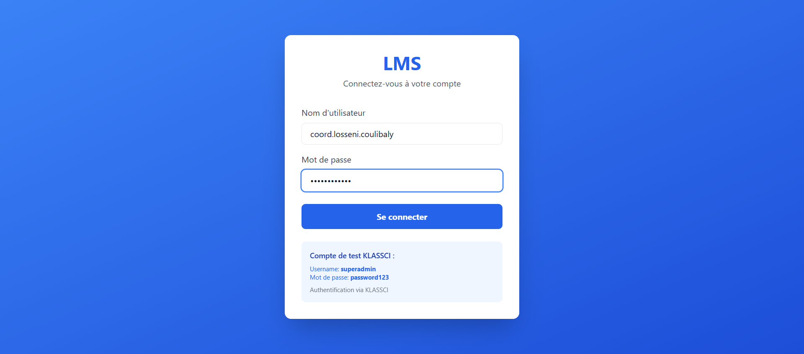
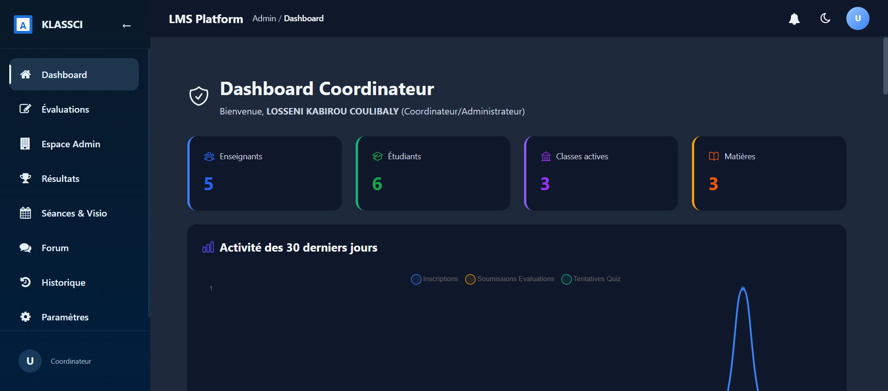
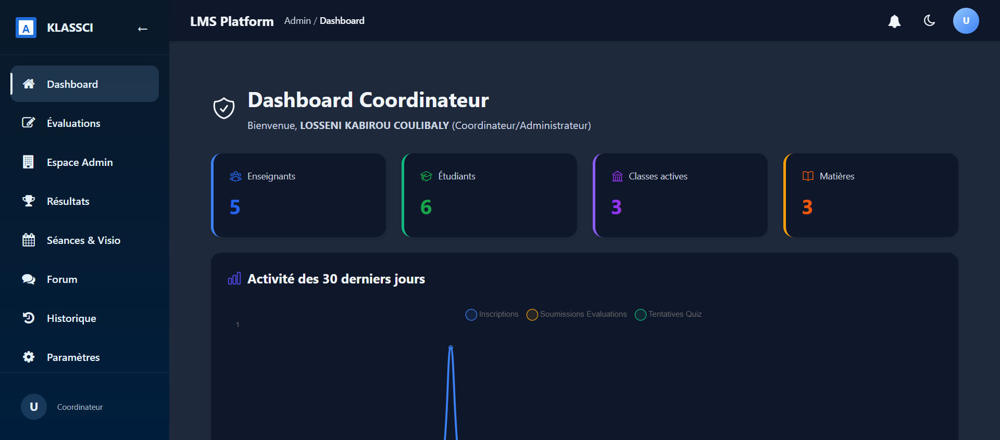
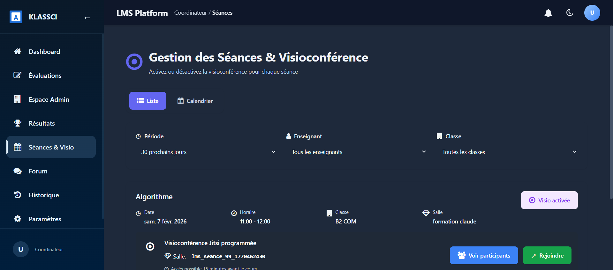
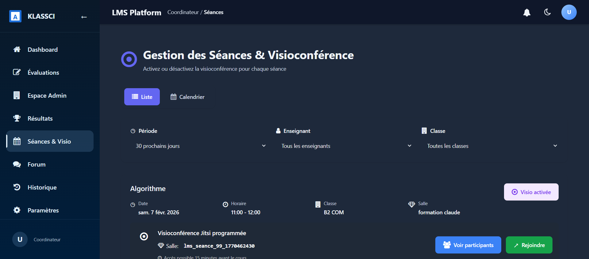
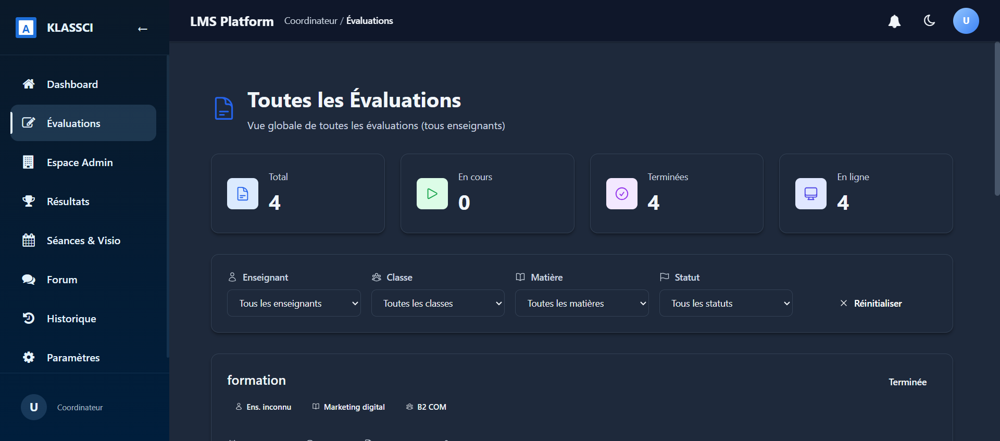
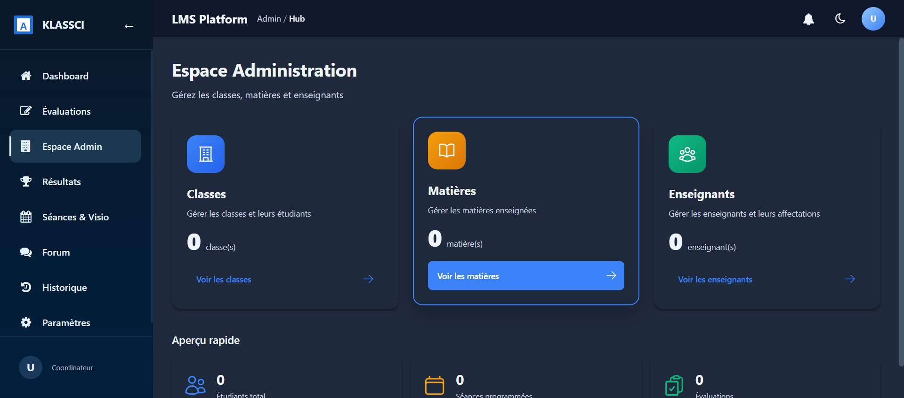
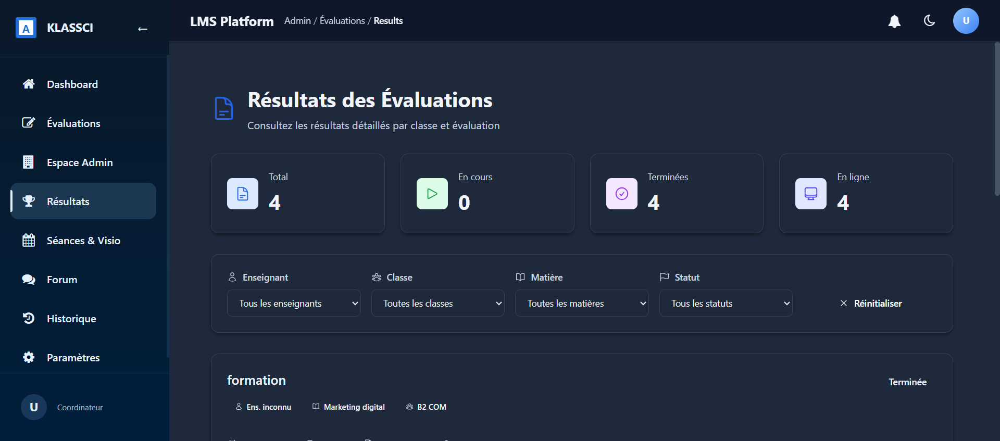
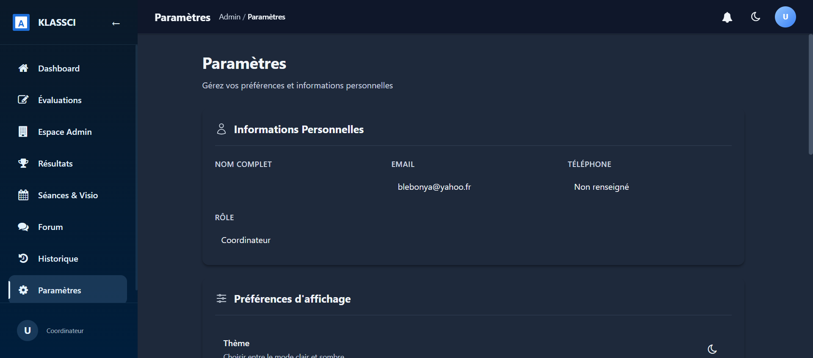

! Rôle du Coordinateur
Le coordinateur a un rôle de supervision et d'administration au sein de la plateforme. Il peut gérer les enseignants, les classes, les matières et superviser l'ensemble des activités pédagogiques.
Différence clé avec l'enseignant :
Le coordinateur peut activer/désactiver la visioconférence des séances, mais ne peut pas démarrer un cours en direct. Seul l'enseignant concerné peut démarrer le cours.
| Action |
Coordinateur |
Enseignant |
| Activer/Désactiver la visio |
Oui |
Oui |
| Démarrer un cours en direct |
Non |
Oui |
| Gérer les classes et matières |
Oui |
Non |
| Voir toutes les évaluations |
Oui (tous les enseignants) |
Oui (les siennes) |
| Gérer les enseignants |
Oui |
Non |
1 Connexion à la plateforme
Rendez-vous sur la page de connexion et saisissez vos identifiants coordinateur.
- Entrez votre nom d'utilisateur coordinateur
- Entrez votre mot de passe
- Cliquez sur "Se connecter"

Page de connexion - Saisie des identifiants coordinateur
2 Tableau de bord
Le tableau de bord du coordinateur offre une vue globale de l'ensemble de l'établissement.

Tableau de bord coordinateur avec les statistiques globales
Informations affichées :
- Nombre d'enseignants inscrits sur la plateforme
- Nombre d'étudiants inscrits
- Nombre de classes actives
- Nombre de matières configurées
- Actions rapides pour accéder aux fonctions principales

Vue complète du tableau de bord avec les actions rapides
3 Gestion des séances et visioconférence
Cette section est cruciale pour le coordinateur. Elle permet de superviser toutes les séances et de gérer l'activation de la visioconférence.

Page de gestion des séances et visioconférence
Fonctionnalités disponibles
- Voir toutes les séances de tous les enseignants
- Activer la visioconférence pour une séance
- Désactiver la visioconférence si nécessaire
- Consulter le statut des cours en direct

Vue complète de la gestion des séances avec les options de visioconférence
Activer/Désactiver la visio
- Repérez la séance concernée dans la liste
- Cliquez sur le bouton "Activer la visio" ou "Désactiver la visio"
- Le statut de la séance est mis à jour immédiatement
Rappel :
En tant que coordinateur, vous pouvez activer la visio pour préparer une séance, mais c'est l'enseignant qui devra démarrer le cours en direct le moment venu.
4 Évaluations
Le coordinateur a accès à toutes les évaluations de tous les enseignants de l'établissement.

Liste de toutes les évaluations - Vue coordinateur
Vous pouvez :
- Consulter les évaluations de chaque enseignant
- Voir les détails de chaque évaluation
- Suivre l'avancement des évaluations
- Accéder aux résultats et statistiques
5 Espace Administration
L'espace d'administration vous permet de gérer les classes, matières et enseignants.

Espace d'administration - Gestion des classes, matières et enseignants
Gestion des classes
Créez, modifiez ou consultez les classes de votre établissement.
Gestion des matières
Administrez les matières enseignées et leur attribution aux enseignants.
Gestion des enseignants
Consultez la liste des enseignants et gérez leurs affectations.
6 Résultats des évaluations
Consultez les résultats détaillés des évaluations de tous les étudiants.

Page des résultats des évaluations
Cette section permet de :
- Voir les notes de chaque étudiant
- Comparer les performances entre classes
- Suivre les statistiques globales
7 Paramètres
Gérez les paramètres de votre compte coordinateur.

Paramètres du compte coordinateur
Options disponibles :
- Modifier vos informations personnelles
- Changer votre mot de passe
- Configurer les préférences de la plateforme